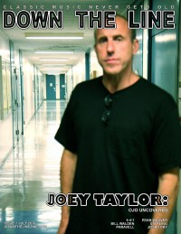

CMnexus
: Contemporary Christian culture, music, and media.
|
|
Ojo TaylorOn the cover|  | July 2010
Down The Line | Media coverage:- Aug 1983 in CCM "New Music For New Hearts", by Mary Neely
- 1984 in Cornerstone "Interview: Interviews With Cornerstone '84 Artists"
- Nov 1985 in Christian Life "Christian Rock: Controversy on the Cutting Edge", by Davin Seay
- Aug 1987 in CCM "No Longer Undercover", by Brian Quincy Newcomb
- Apr 1988 in CCM "Beating The System: Making It As An Independent", by Brian Quincy Newcomb
- Spr 1989 in Harvest Rock Syndicate "Ojo: A Man For All Seasons", by Dan MacIntosh
- Nov 1996 in HM "Joseph Taylor", by Dan MacIntosh
- Jun 2000 in CCM "Remembering Gene", by Dave Urbanski
- Nov 2003 in HM "If I Had A Dream. Whatever Happened To Undercover", by Ronnie Martin
- Mar 2009 in Down The Line "Gene "Eugene" Andrusco: His Friends and Family Remember: Ojo Taylor (Undercover) on Gene Eugene"
- Jul 2010 in Down The Line "Ojo Uncovered", by Steve Ruff
- Jan 2011 in Down The Line "Joey Taylor talks to Down The Line about all the classic reissues that are coming out", by Steve Ruff
- Jul 2017 in Down The Line "Ojo Taylor"
Albums & reviews:Books about Ojo TaylorPublished articles:1 article credited in Down The Line: 2015. |
|